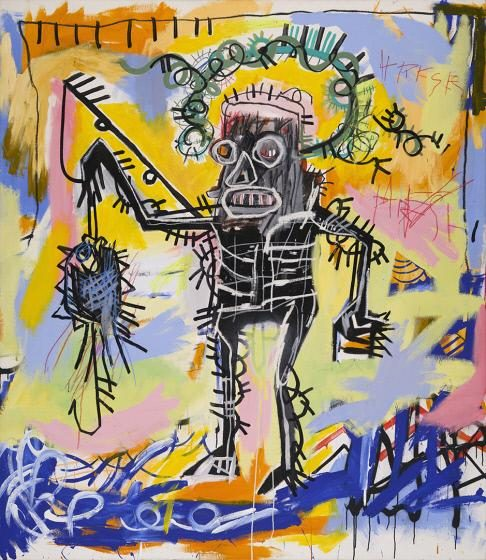
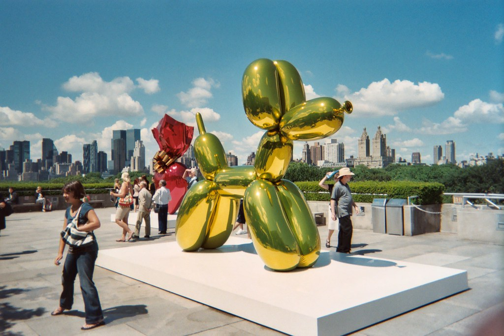

This piece is created by OSGEMEOS. OSGEMEOS is a Portuguese word meaning the twins. OSGEMEOS are identical twin street artists Otavio Pandolfo and Gustavo Pandolfo. This piece is mixed media on wood and is mainly created using spray paint.
"Untitled"

This piece is created by Basquiat. Basquiat, an artist from France, created this piece using oil stick, acrylic, and spray enamel on canvas.
"Balloon Dog"

This piece is created by the American artist Jeff Koons. "Balloon Dog" looks like it's filled with air, but it's made of stainless steel and weighs over a ton. "We had to make machines to make this work. They didn't exist," Koons said.